材料 6個分
※粉量を変えると自動計算されます
生地
フィリング
作り方
生地
STEP 1
レーズンをお湯でもどす
レーズンをお湯に浸して、しっかり水分を吸わせておきます。あらかじめ保水させることで、焼いたときに表面に出たレーズンが焦げにくく、ふっくらジューシーに仕上がります。
レーズンをお湯に浸して、しっかり水分を吸わせておきます。あらかじめ保水させることで、焼いたときに表面に出たレーズンが焦げにくく、ふっくらジューシーに仕上がります。
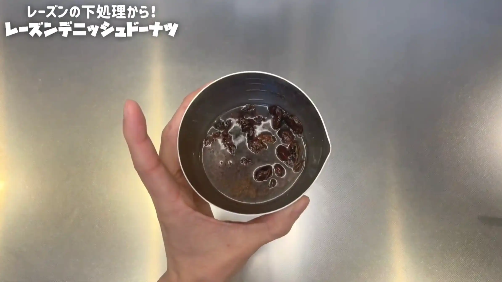
STEP 2
仕込み水を作る
ぬるま湯に砂糖とドライイーストを加え、しっかり混ぜ合わせます。
ぬるま湯に砂糖とドライイーストを加え、しっかり混ぜ合わせます。
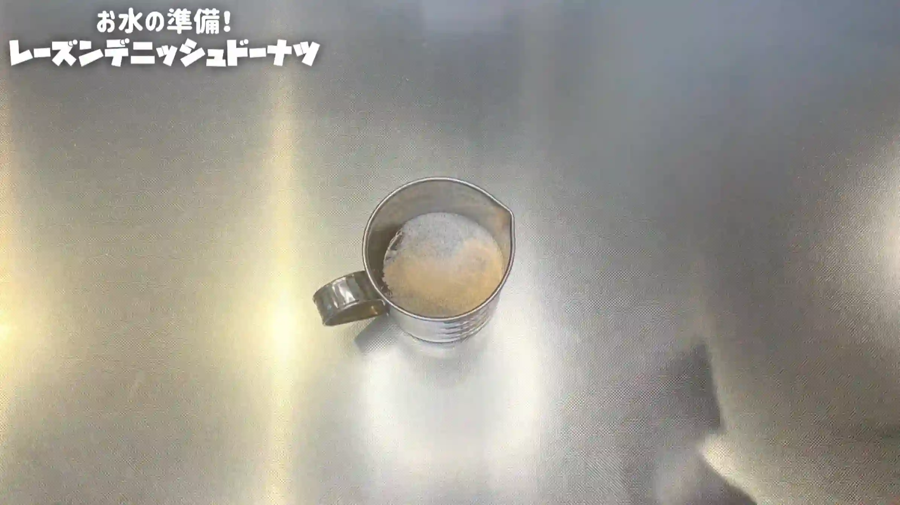
STEP 3
粉類と仕込み水をヘラで混ぜる
強力粉と塩に仕込み水を加え、ヘラで2分ほど混ぜます。粉が見えなくなって全体がまとまってきたら、次の工程へ進みます。
強力粉と塩に仕込み水を加え、ヘラで2分ほど混ぜます。粉が見えなくなって全体がまとまってきたら、次の工程へ進みます。
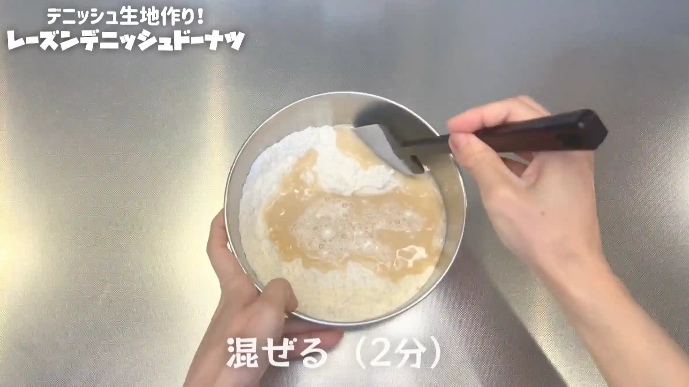
STEP 4
バターを加え、手で捏ねる（[動画 02:43]）
バターを加え、手で4分ほど捏ねます。最初は生地がベタつきますが、そのままボウルの中でちょい捏ねしていきます。捏ねているうちに少しずつ生地がまとまり、ボウルから離れやすくなったら、次の工程へ進みます。
バターを加え、手で4分ほど捏ねます。最初は生地がベタつきますが、そのままボウルの中でちょい捏ねしていきます。捏ねているうちに少しずつ生地がまとまり、ボウルから離れやすくなったら、次の工程へ進みます。
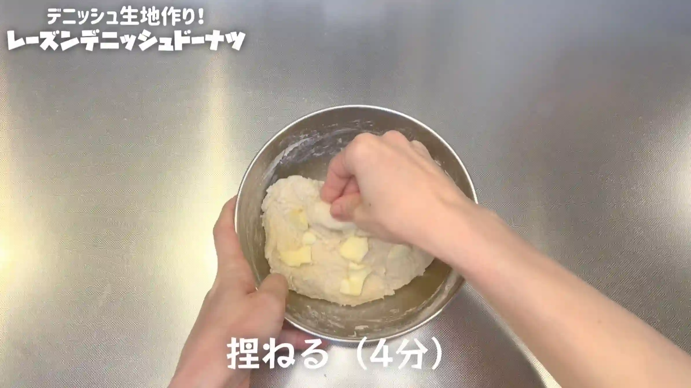
STEP 5
室温で60分おく
乾燥しないようにラップをして、一次発酵させます。生地に少し粗さが残っていますが、ここでなめらかにする必要はなく、折り込みの工程で整えていきます。
乾燥しないようにラップをして、一次発酵させます。生地に少し粗さが残っていますが、ここでなめらかにする必要はなく、折り込みの工程で整えていきます。
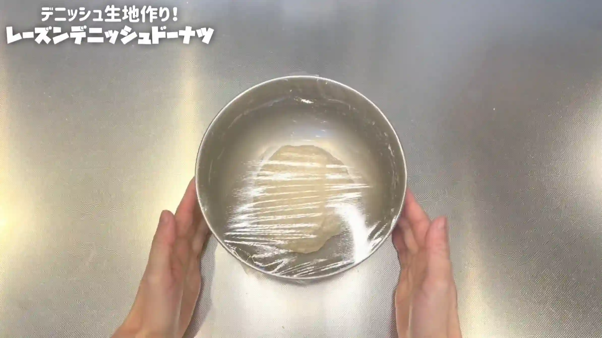
STEP 6
バターシートを作る
STEP 7
生地を広げてバターシートを置く
生地を広げ、バターシートの2倍ほどの大きさにして、真ん中にバターシートを置きます。折り込むときに端からバターが出てこないよう、上下の生地に少しゆとりを持たせるのがコツです。画像を参考にしてください。
生地を広げ、バターシートの2倍ほどの大きさにして、真ん中にバターシートを置きます。折り込むときに端からバターが出てこないよう、上下の生地に少しゆとりを持たせるのがコツです。画像を参考にしてください。
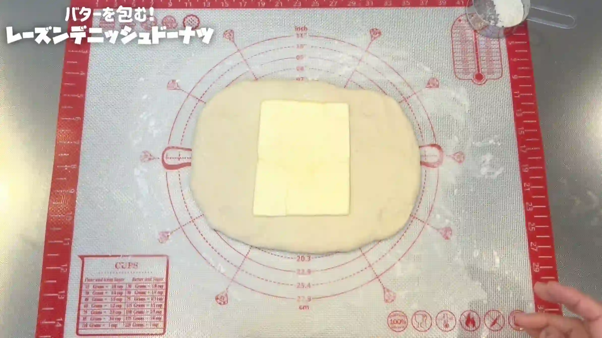
STEP 8
生地でバターシートを包む
生地の端を合わせながらバターシートをくるんで、継ぎ目を指でしっかり閉じます。バターがはみ出すと次の折り込みで作業しにくくなるので、隙間ができないようにします。
生地の端を合わせながらバターシートをくるんで、継ぎ目を指でしっかり閉じます。バターがはみ出すと次の折り込みで作業しにくくなるので、隙間ができないようにします。
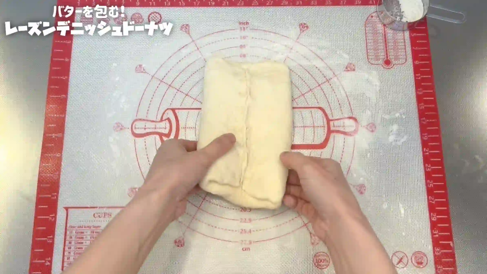
STEP 9
「縦1：横2」に伸ばす（[動画 06:47]）
生地を横長の向きに置き、まずは生地とバターを密着させるように、手でやさしく押して生地の厚みをそろえます。縦方向は自分の手の長さを目安に伸ばし、そこから横を約2倍の長さまで伸ばします。細かいサイズは気にせず、大体「縦1：横2」の比率になるように伸ばします。
生地を横長の向きに置き、まずは生地とバターを密着させるように、手でやさしく押して生地の厚みをそろえます。縦方向は自分の手の長さを目安に伸ばし、そこから横を約2倍の長さまで伸ばします。細かいサイズは気にせず、大体「縦1：横2」の比率になるように伸ばします。
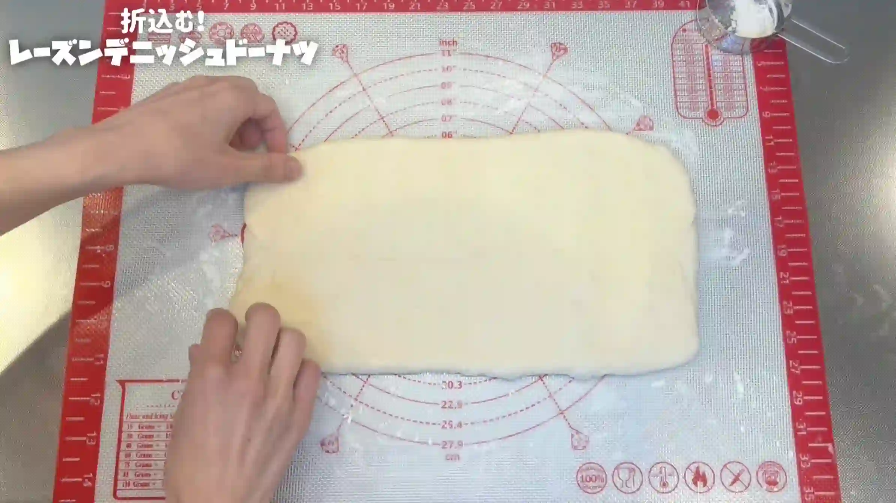
STEP 10
三つ折りする（1回目）
生地を三つ折りにします。折り目と端をそろえておくと、重なった層が乱れにくくなります。
生地を三つ折りにします。折り目と端をそろえておくと、重なった層が乱れにくくなります。
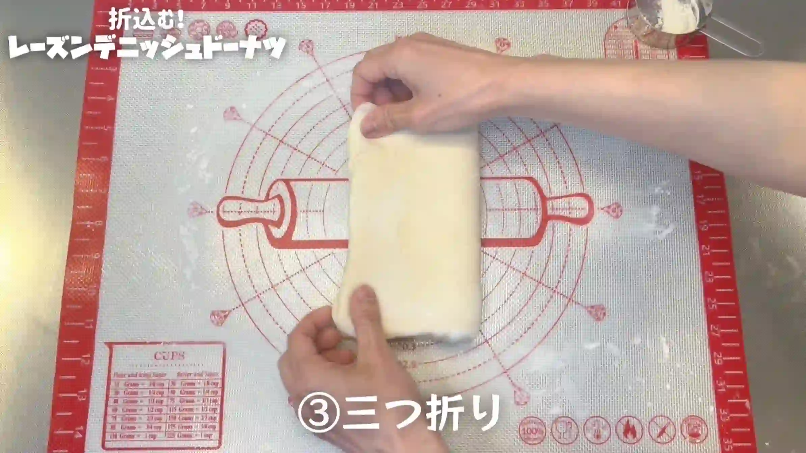
STEP 11
「縦1：横2」に伸ばす
再び「縦1：横2」の大きさを目安に伸ばします。細かく測らなくても、手の長さを目安に縦を決め、横をその約2倍にすればOKです。
再び「縦1：横2」の大きさを目安に伸ばします。細かく測らなくても、手の長さを目安に縦を決め、横をその約2倍にすればOKです。
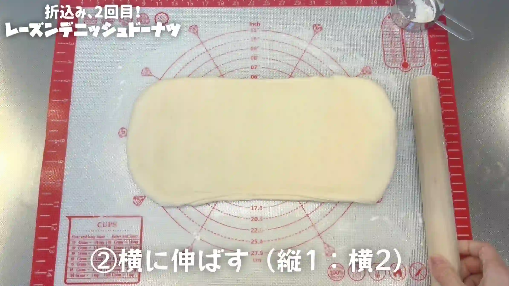
STEP 12
三つ折りする（2回目）
再び三つ折りにします。
再び三つ折りにします。
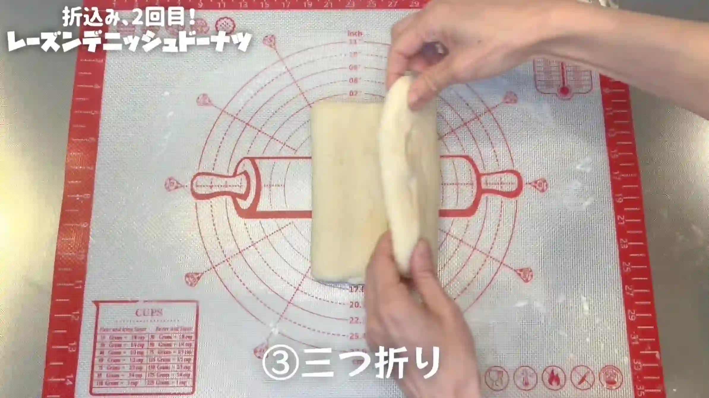
STEP 13
30分冷蔵する
生地をラップで包み、冷蔵庫で30分冷やします。バターが固まって、生地が扱いやすくなります。このあとレーズンを加えて最後の三つ折りをするため、しっかり休ませてから次へ進みます。
生地をラップで包み、冷蔵庫で30分冷やします。バターが固まって、生地が扱いやすくなります。このあとレーズンを加えて最後の三つ折りをするため、しっかり休ませてから次へ進みます。
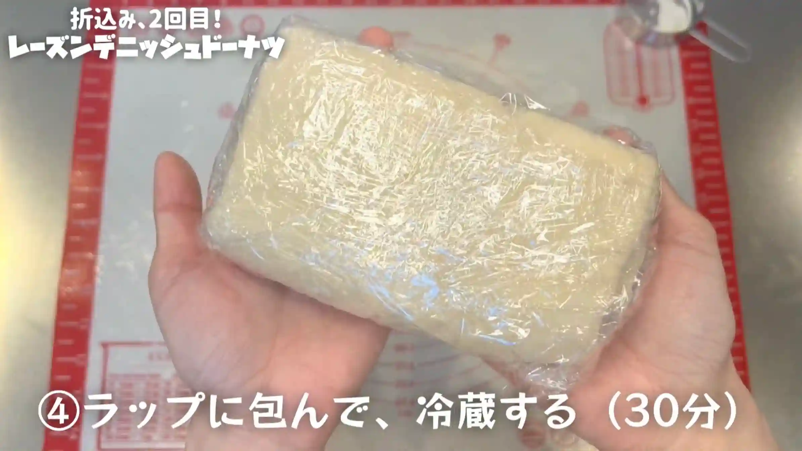
STEP 14
レーズンの水気を切る
レーズンをザルなどにあけ、余分な水気をしっかり切っておきます。
レーズンをザルなどにあけ、余分な水気をしっかり切っておきます。
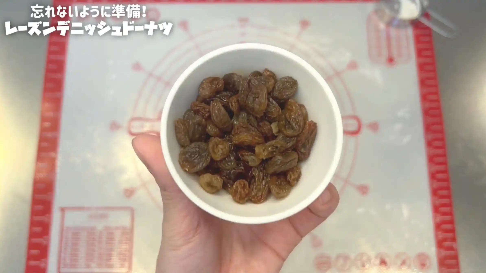
STEP 15
「縦1：横2」に伸ばす（[動画 09:34]）
再び「縦1：横2」の大きさを目安に伸ばします。生地に空気が入った場合は、包丁などで少し切れ目を入れて空気を抜くと、生地を伸ばしやすくなります。
再び「縦1：横2」の大きさを目安に伸ばします。生地に空気が入った場合は、包丁などで少し切れ目を入れて空気を抜くと、生地を伸ばしやすくなります。
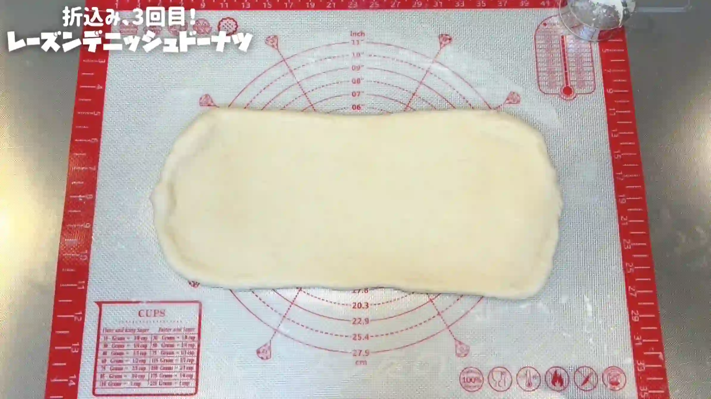
STEP 16
レーズンを入れて三つ折りする（3回目）
生地の2/3にレーズンを広げ、三つ折りにします。ここまでレーズンを入れずに折り込み、最後の三つ折りで加えることで、レーズンが潰れにくく、デニッシュの層もきれいに残しやすくなります。
生地の2/3にレーズンを広げ、三つ折りにします。ここまでレーズンを入れずに折り込み、最後の三つ折りで加えることで、レーズンが潰れにくく、デニッシュの層もきれいに残しやすくなります。
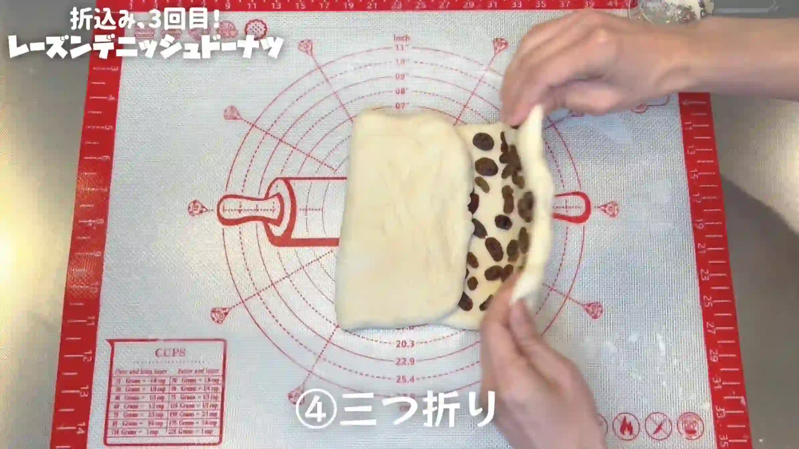
STEP 17
18㎝×20㎝に伸ばす
このあと6本の短冊に切ってねじるため、18㎝×20㎝ほどの長方形に伸ばします。ここまでくると生地が硬く、なかなか伸びませんが、時間をかけて、厚みがそろうようにゆっくり伸ばしてください。
このあと6本の短冊に切ってねじるため、18㎝×20㎝ほどの長方形に伸ばします。ここまでくると生地が硬く、なかなか伸びませんが、時間をかけて、厚みがそろうようにゆっくり伸ばしてください。
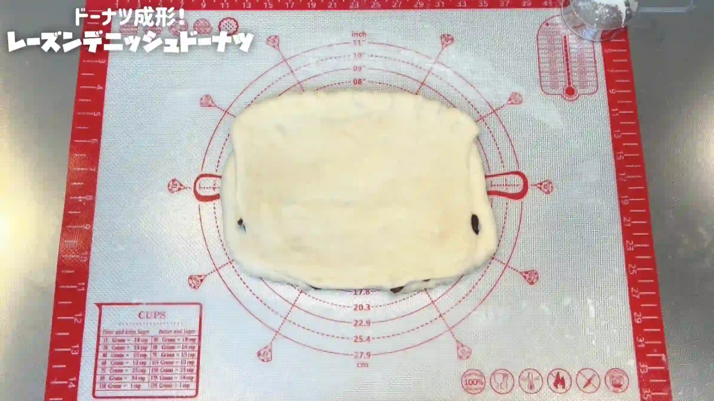
STEP 18
6本の短冊状に切り分ける
生地を画像のように、6本の短冊状に切り分けます。
生地を画像のように、6本の短冊状に切り分けます。
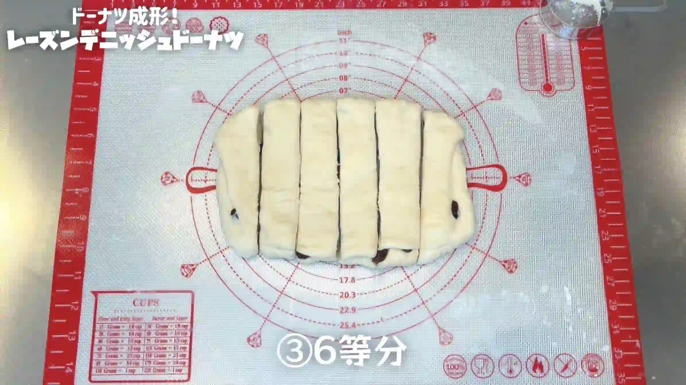
STEP 19
ドーナツ状に成形する（[動画 11:02]）
生地の端に少し「みみ」を作ってから、ねじってドーナツ状にします。強力粉で作った生地はコシがあるため、閉じ目が開きやすくなります。最後は「グッ」と少し強めに閉じるのがポイントです。
生地の端に少し「みみ」を作ってから、ねじってドーナツ状にします。強力粉で作った生地はコシがあるため、閉じ目が開きやすくなります。最後は「グッ」と少し強めに閉じるのがポイントです。
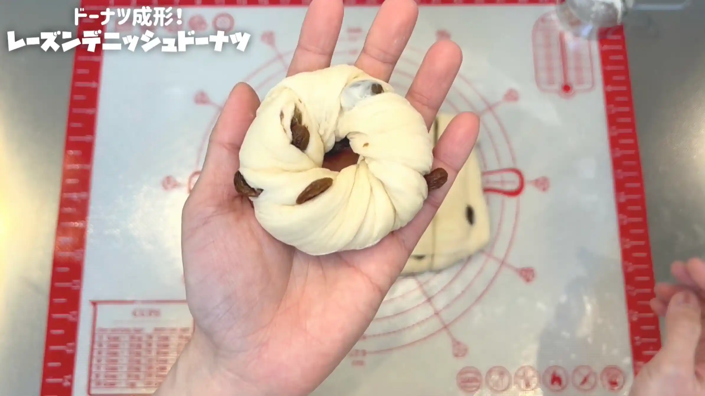
STEP 20
室温で80分おく
生地を天板にのせ、乾燥しないようにラップをして、二次発酵させます。この時、とじ目を内側にして、生地同士を少し寄せて天板にのせます。こうすることで、とじ目が開いてきても隣の生地が支えになり、ちぎりパンのように生地同士がくっついて、きれいなドーナツ状に焼き上がります。
生地を天板にのせ、乾燥しないようにラップをして、二次発酵させます。この時、とじ目を内側にして、生地同士を少し寄せて天板にのせます。こうすることで、とじ目が開いてきても隣の生地が支えになり、ちぎりパンのように生地同士がくっついて、きれいなドーナツ状に焼き上がります。
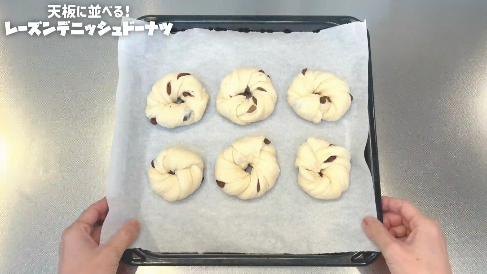
STEP 21
オーブンを200℃に予熱する
焼成前にオーブンを200℃に予熱しておきます。
焼成前にオーブンを200℃に予熱しておきます。
STEP 22
牛乳を塗り、オーブン200℃で19分焼く
表面に牛乳を薄く塗って焼きます。表面がきつね色になるまでを目安に、様子を見ながら焼いてください。時間はオーブンによって変わるので、色づき具合で調整します。
表面に牛乳を薄く塗って焼きます。表面がきつね色になるまでを目安に、様子を見ながら焼いてください。時間はオーブンによって変わるので、色づき具合で調整します。
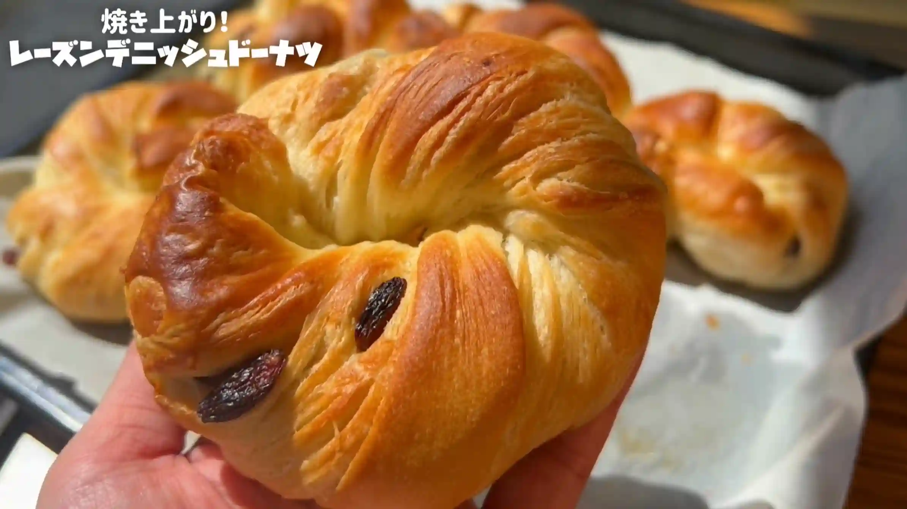
STEP 23
好きなお砂糖をまぶす
焼き上がったら、熱いうちに好きなお砂糖をたっぷりまぶします。砂糖の種類や量を変えて、自分好みの甘さに仕上げてください。
焼き上がったら、熱いうちに好きなお砂糖をたっぷりまぶします。砂糖の種類や量を変えて、自分好みの甘さに仕上げてください。
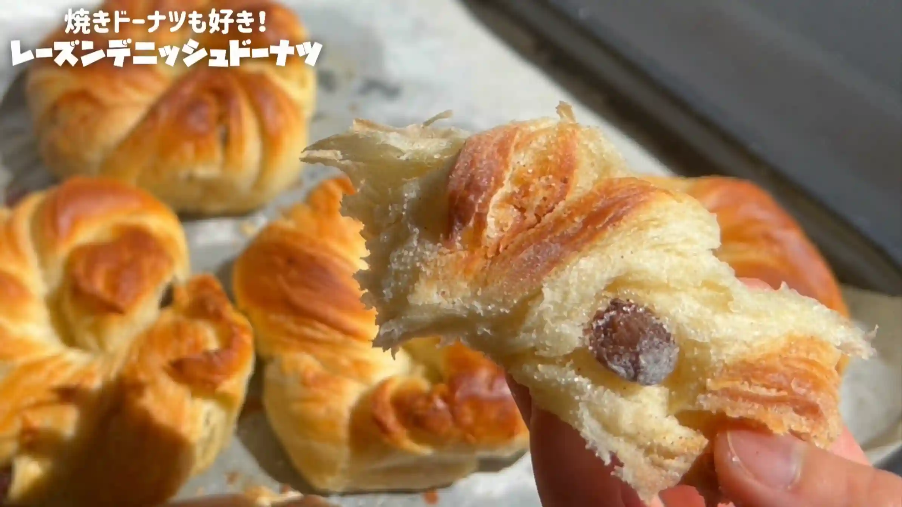
バターシート
STEP 1
ラップにバターを並べる
折り込み用のバターシートを作ります。バター40gを6枚に切り分け、広げたラップに長方形になるよう並べます。バターの目盛りを目安にすれば、細かく量らなくても大丈夫です。
折り込み用のバターシートを作ります。バター40gを6枚に切り分け、広げたラップに長方形になるよう並べます。バターの目盛りを目安にすれば、細かく量らなくても大丈夫です。
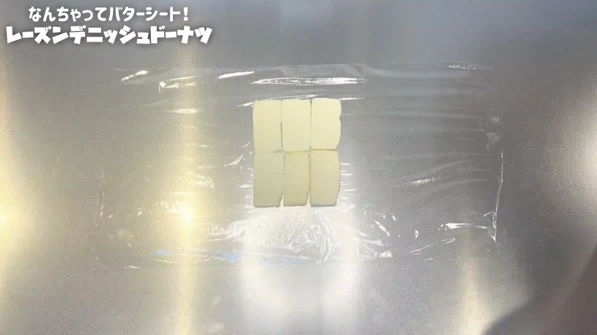
STEP 2
ラップをピッタリ閉じる
並べたバターの大きさに合わせてラップを折り、すき間なくぴったり閉じます。バターがはみ出さないようにするためです。
並べたバターの大きさに合わせてラップを折り、すき間なくぴったり閉じます。バターがはみ出さないようにするためです。
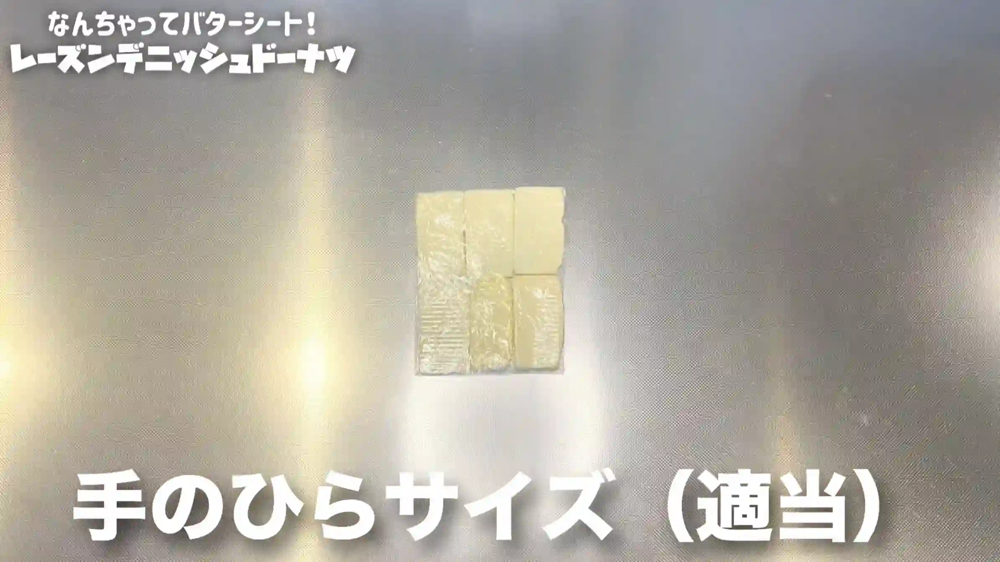
STEP 3
めん棒で平らにならす
めん棒でバターを押しながら、つなぎ目が消えるまでならします。手のひらくらいの大きさの長方形になれば完成です。
めん棒でバターを押しながら、つなぎ目が消えるまでならします。手のひらくらいの大きさの長方形になれば完成です。
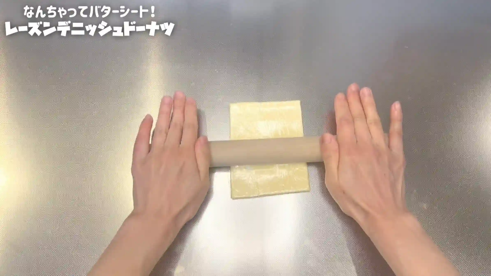
STEP 4
冷蔵する
折り込みに使いやすい硬さになるまで冷蔵します。バターが柔らかすぎると、折り込みの際にはみ出してきてしまうので、冷たい状態を保っておきます。
折り込みに使いやすい硬さになるまで冷蔵します。バターが柔らかすぎると、折り込みの際にはみ出してきてしまうので、冷たい状態を保っておきます。
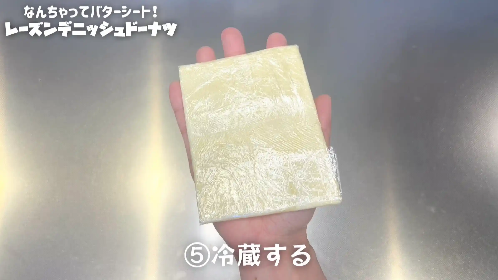
動画でチェック
おいしく作るためのワンポイントコラム
こんにちは、おなおドーナツです！
「焼きドーナツが揚げドーナツを上回ることなんて…ない！」と思っていた私。でも、このレーズンデニッシュドーナツを食べた瞬間、焼きドーナツへのイメージがガラリと覆ります！特別な材料や道具がなくても、ボウルとヘラがあれば気楽に作ることができるのに、仕上がりはまるで揚げたてのような贅沢な味わい。好きなお砂糖をたっぷりまぶせば、自分好みの可愛いドーナツのできあがりです！それでは、おうちで美味しく焼くための3つのコツをまとめました。
① レーズンの仕込み
レーズンを生地にそのまま混ぜて焼くと、表面に出た部分が焦げてしまいがちですよね。そうならないためのポイントは、事前にお湯に浸してたっぷり水分を吸わせておくことです。しっかり保水させることで、オーブンの熱でも焦げにくくなり、ジューシーでふっくらとした食感に仕上がります。
② 手のサイズで測る「簡単折り込み」
デニッシュの折り込み作業って、縦は何センチ、横は何センチと測りながら伸ばすイメージがあって大変そうですよね。このレシピでは、そんな細かい計測は一切不要です！縦方向は自分の手の長さを目安に伸ばし、そこから『縦を1、横を2』の長財布のような比率になるよう横に伸ばすだけでOK。多少バターが透けたり生地がヨレたりしても、粉を振りながら丁寧に伸ばしましょう。三つ折りを3回繰り返せば、綺麗なデニッシュ層ができあがります。
③ 「成形と配置のコツ」
強力粉で作る折り込み生地はコシが強いため、ドーナツ型にした時、閉じ目が開きがちです。端っこに少し「耳」を作ってから丸め、最後は「グっ」と強めに閉じるのがコツ。そして天板に並べる時は、あえて少し寄せ気味に配置して、みんなで支え合うように置くのがポイントです。こうして隣同士を近づけておくことで、焼いている途中にとじ目がほどけてバラバラになるのを防ぎ、ふっくら可愛い形をキープして焼き上げることができます。
焼き上がったら、熱いうちに好きなお砂糖をたっぷりまぶせば最高の焼きドーナツの完成です！デニッシュ生地のサクサク感とレーズンの甘みが合わさって、一口食べれば幸せが口いっぱいに広がります。それでは、おうちパン作りの時間を一緒に満喫しましょう！
「焼きドーナツが揚げドーナツを上回ることなんて…ない！」と思っていた私。でも、このレーズンデニッシュドーナツを食べた瞬間、焼きドーナツへのイメージがガラリと覆ります！特別な材料や道具がなくても、ボウルとヘラがあれば気楽に作ることができるのに、仕上がりはまるで揚げたてのような贅沢な味わい。好きなお砂糖をたっぷりまぶせば、自分好みの可愛いドーナツのできあがりです！それでは、おうちで美味しく焼くための3つのコツをまとめました。
① レーズンの仕込み
レーズンを生地にそのまま混ぜて焼くと、表面に出た部分が焦げてしまいがちですよね。そうならないためのポイントは、事前にお湯に浸してたっぷり水分を吸わせておくことです。しっかり保水させることで、オーブンの熱でも焦げにくくなり、ジューシーでふっくらとした食感に仕上がります。
② 手のサイズで測る「簡単折り込み」
デニッシュの折り込み作業って、縦は何センチ、横は何センチと測りながら伸ばすイメージがあって大変そうですよね。このレシピでは、そんな細かい計測は一切不要です！縦方向は自分の手の長さを目安に伸ばし、そこから『縦を1、横を2』の長財布のような比率になるよう横に伸ばすだけでOK。多少バターが透けたり生地がヨレたりしても、粉を振りながら丁寧に伸ばしましょう。三つ折りを3回繰り返せば、綺麗なデニッシュ層ができあがります。
③ 「成形と配置のコツ」
強力粉で作る折り込み生地はコシが強いため、ドーナツ型にした時、閉じ目が開きがちです。端っこに少し「耳」を作ってから丸め、最後は「グっ」と強めに閉じるのがコツ。そして天板に並べる時は、あえて少し寄せ気味に配置して、みんなで支え合うように置くのがポイントです。こうして隣同士を近づけておくことで、焼いている途中にとじ目がほどけてバラバラになるのを防ぎ、ふっくら可愛い形をキープして焼き上げることができます。
焼き上がったら、熱いうちに好きなお砂糖をたっぷりまぶせば最高の焼きドーナツの完成です！デニッシュ生地のサクサク感とレーズンの甘みが合わさって、一口食べれば幸せが口いっぱいに広がります。それでは、おうちパン作りの時間を一緒に満喫しましょう！


おうちで手軽に作れる！揚げドーナツ派の人にも一度は試してほしい、外はサクッと中はしっとりな『レーズンデニッシュドーナツ』のレシピです！オーブンで焼くのにまるで揚げたてのような美味しさに大変身します。コラムでは、気楽に手軽においしく作るための「レーズンの仕込み」「簡単折り込み」「成形と配置」の3つのコツをご紹介します。